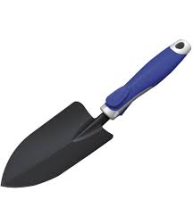
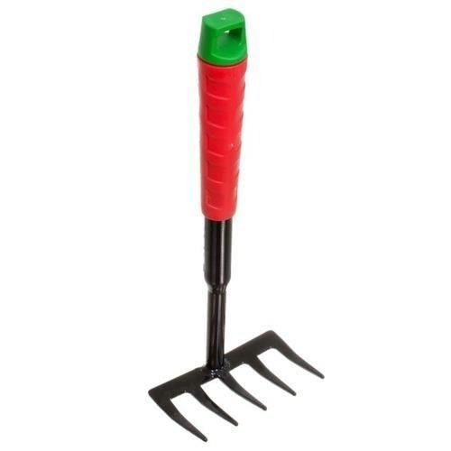

PÁ
Uma pá de jardinagem é uma ferramenta essencial para escavar, levantar e transportar solo, compostagem, ou plantas no jardim. Ela consiste em uma lâmina de metal ou plástico em forma de concha, presa a um cabo longo geralmente feito de madeira ou metal.
A lâmina da pá é projetada para penetrar no solo com facilidade e pode ter bordas afiadas para cortar raízes ou vegetação densa. Para utilizá-la corretamente, você deve posicionar a pá no solo, pressionando com o pé se necessário, e então levantar o solo ou as plantas com um movimento de alavanca. Pode ser usada para cavar buracos para o plantio de mudas, transplantar plantas, remover ervas daninhas, ou para qualquer trabalho que envolva movimentação de terra no jardim. Manter a lâmina afiada e o cabo em boas condições garante maior eficiência e conforto durante o uso da pá de jardinagem.
RASTELO
Um rastelo de jardinagem é uma ferramenta essencial para preparar e manter o solo em jardins, canteiros e gramados. Um rastelo de jardinagem é uma ferramenta essencial para preparar e manter o solo em jardins, canteiros e gramados.
Para utilizá-lo corretamente, você deve segurá-lo firmemente pelas extremidades e passá-lo pelo solo, exercendo uma leve pressão para coletar e remover detritos. Também pode ser utilizado para criar sulcos para o plantio de sementes ou mudas, ou para nivelar a superfície do solo após o plantio. Um rastelo bem cuidado e usado adequadamente é uma peça fundamental para manter seu jardim limpo, organizado e pronto para o cultivo.
REGADOR
Um regador de jardinagem é um recipiente projetado para transportar e distribuir água de maneira controlada em plantas e canteiros no jardim. Geralmente feito de plástico, metal ou cerâmica, o regador possui uma alça e um bico que permitem regar com precisão diferentes áreas do jardim.
Para utilizá-lo, encha o regador com água até a capacidade desejada e segure-o pela alça. Em seguida, incline suavemente o regador para que a água flua pelo bico, controlando o fluxo conforme necessário para evitar excessos ou áreas não desejadas. O regador é ideal para regar plantas delicadas, recém-plantadas ou áreas onde a irrigação por mangueira pode ser impraticável. Manter o regador limpo e armazenado em local seco prolonga sua vida útil e eficácia ao regar o jardim.